統括PM：浪方さん
2・3月は土台を整えることに注力。目標の月38県開催には届かなかったものの、着実に開催地域を拡大。
▶ 発言・行動ともに増加。「参加しているだけ」から「実際に動く」会員様が広がっている状態。
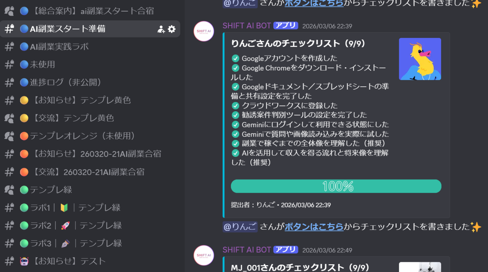
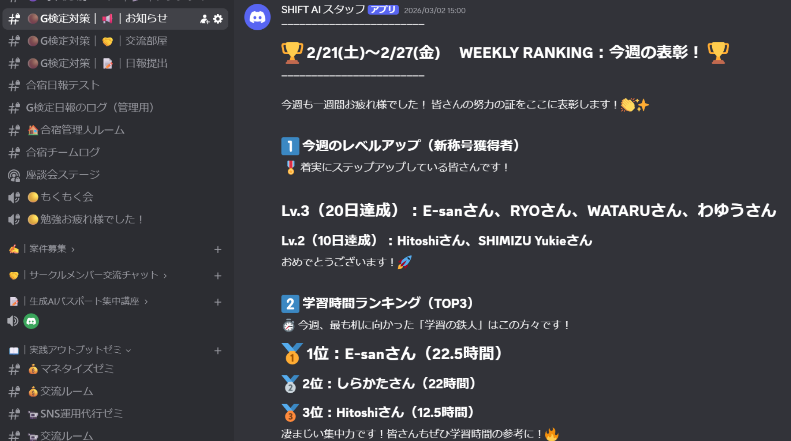
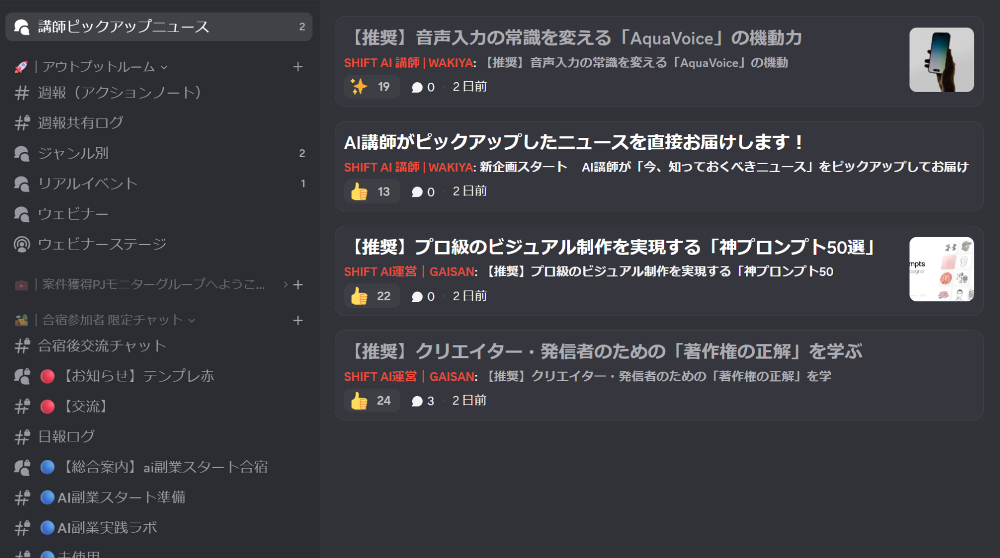
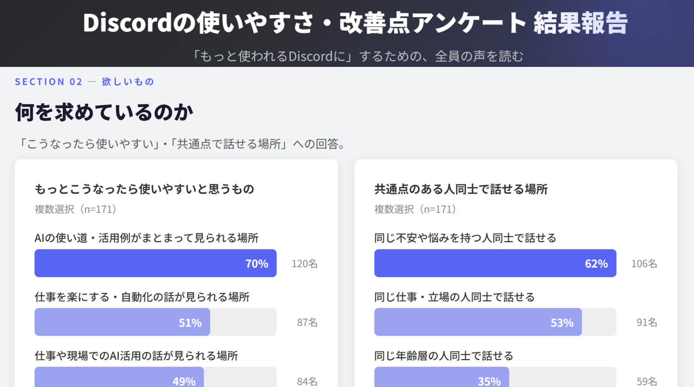
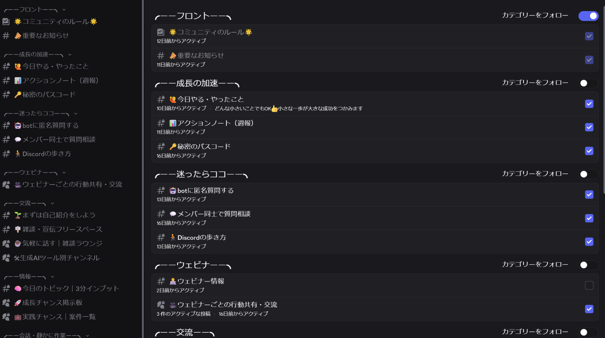
Discordコミュニティは「行動が生まれる場所」へ段階が進んでいます。
各PJにおいて現状整理と再設計を進め、フローや役割分担など前提設計を整理。
現在は設計内容の具体化を進めており、順次実装・運用フェーズへの移行を予定。
成果報告PJでピックアップした会員様の成長ストーリー。AIを活用して実際に成果を出した3名をご紹介。
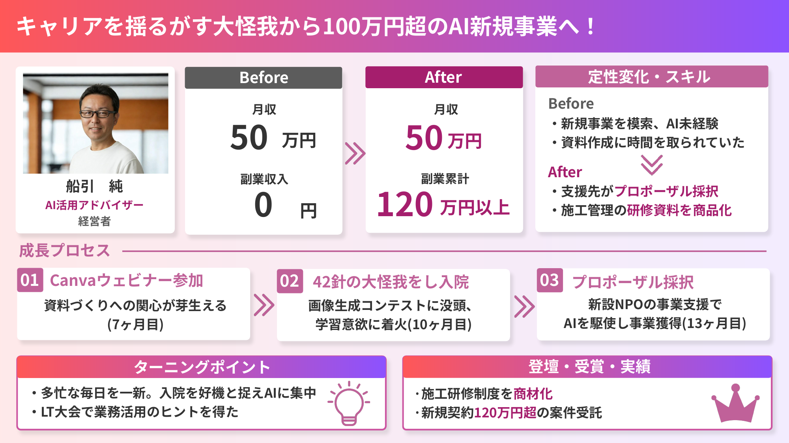
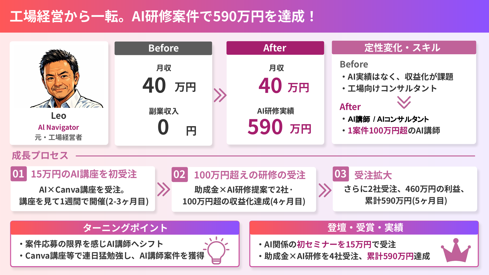
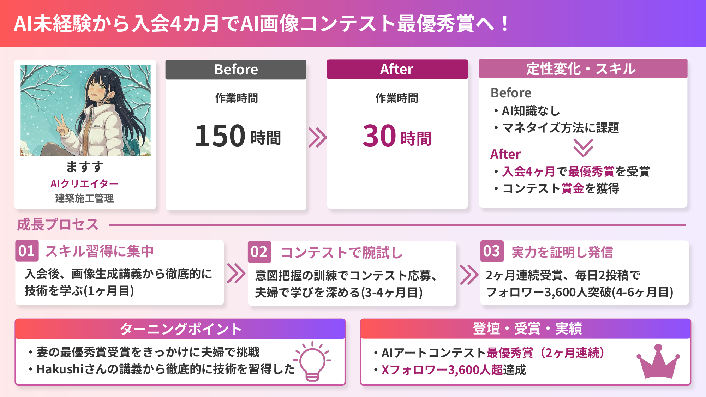
統括PM：田松さん
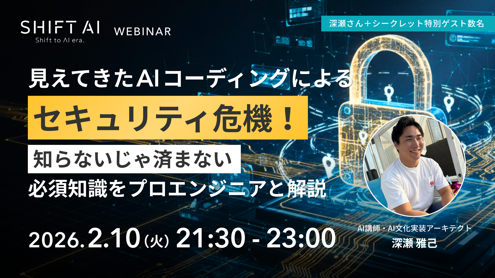
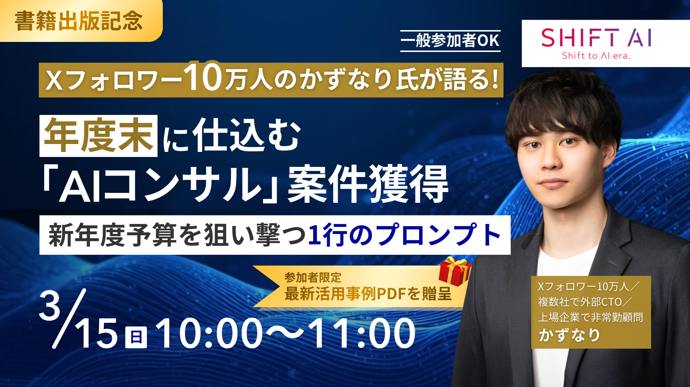
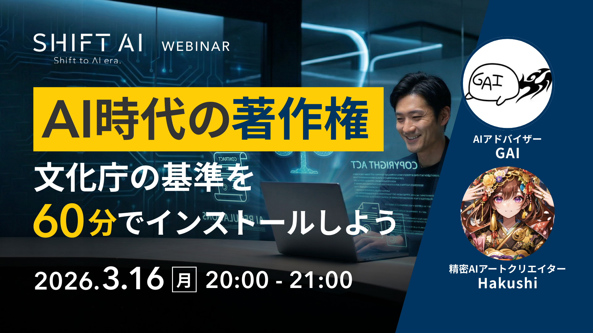
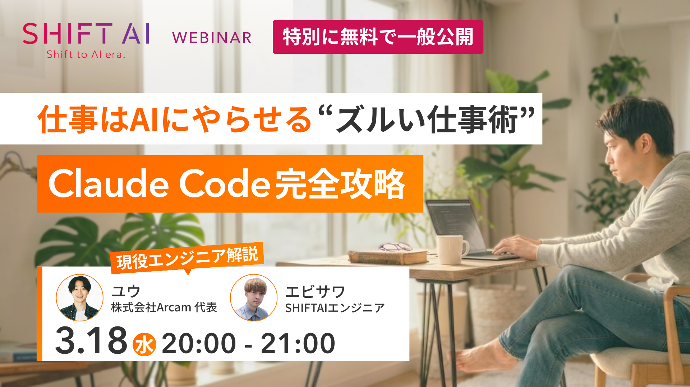
準備期間を経て、今月より月に4回開催を実施！
アンケート満足度が非常に高く、合宿の「行動に直結する」価値が証明された結果。